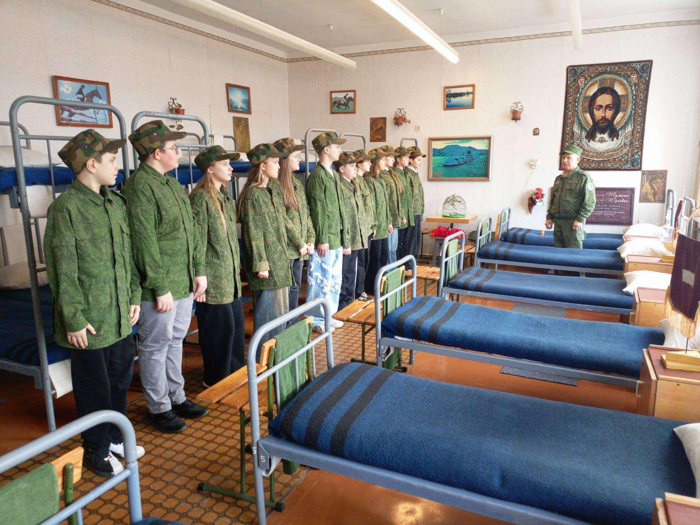
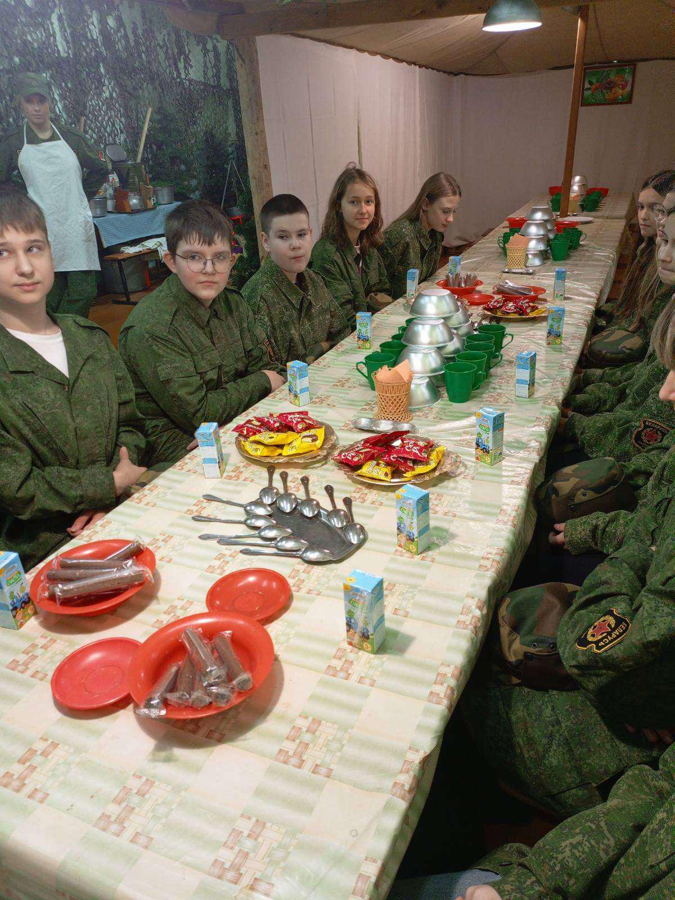
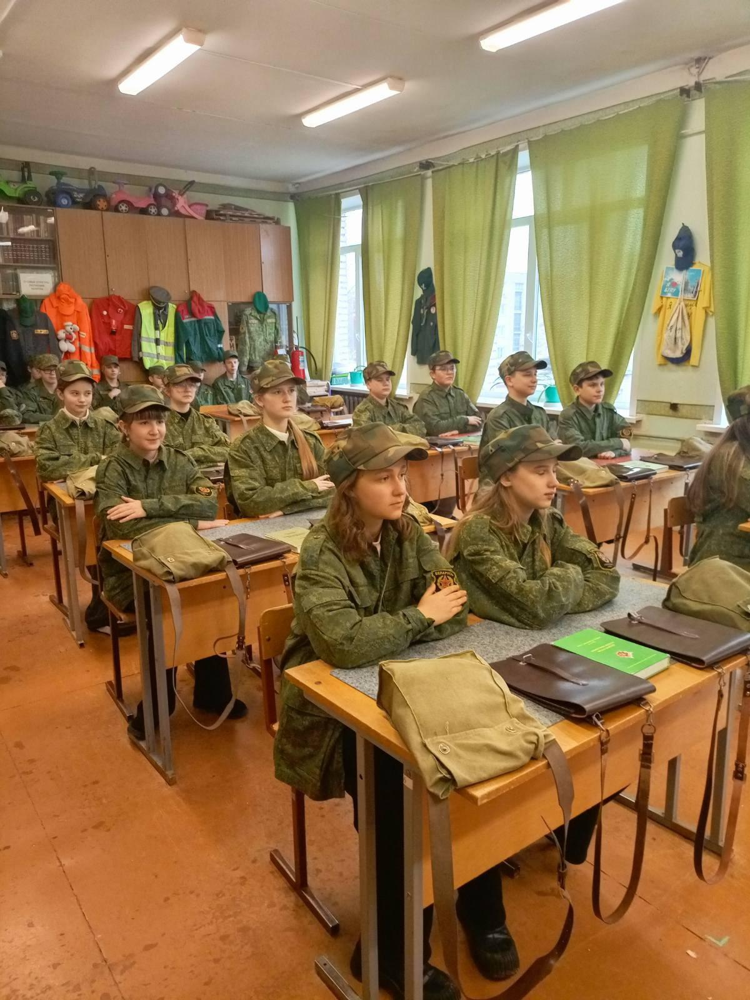
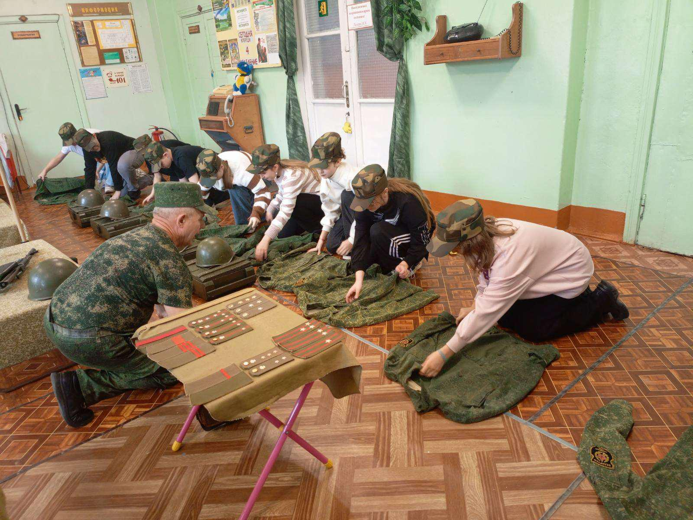
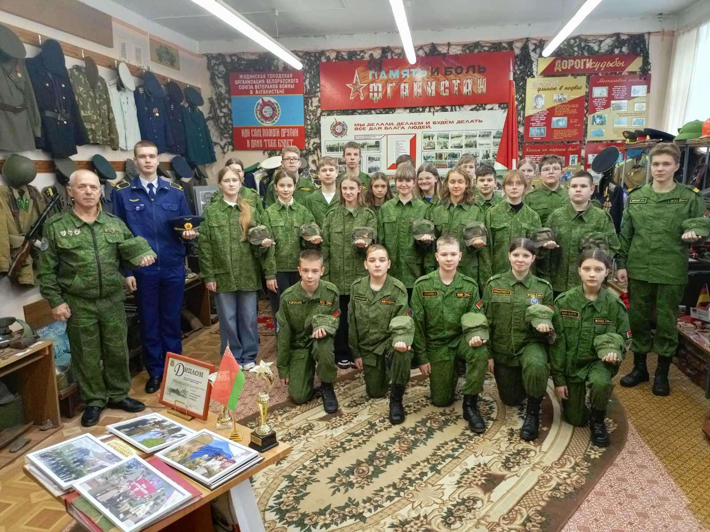
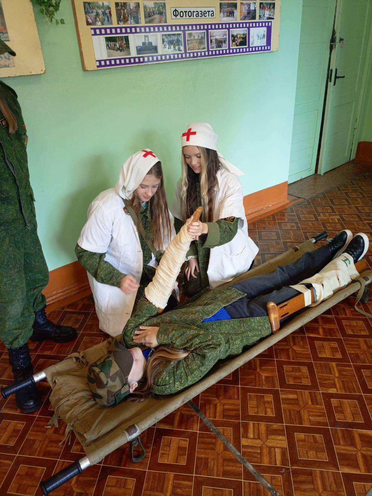

ЭКСКУРСИЯ В ЦЕНТР ПАТРИОТИЧЕСКОГО ВОСПИТАНИЯ «ВЕКТОР»
4 ноября учащиеся 7 «А» класса посетили Центр патриотического воспитания «Вектор» в городе Жодино. Подобного учреждения, в котором уже со школьной скамьи дети осваивают военную науку, в стране больше не существует. Это не кадетское училище и не военно-патриотический класс, в которых допризывная и медицинская подготовка являются профильными предметами. В «Векторе» обучение осуществляется по специальной программе, разработанной основателем и его бессменным руководителем Игорем Лазаревым, который, к слову, в 2016 году получил почетное звание «Человек года Минщины».

Как отметил Игорь Алексеевич, подростки приходят в «Вектор» после школьных уроков. Занятия начинаются после того, как воспитанники переоделись, причем не в спецодежду, а в настоящую боевую форму. У каждого из курсантов есть и парадный комплект, в котором они участвуют на многих торжествах и мероприятиях. Никто принудительно на занятия не ходит. Главное правило в центре – добровольность. Не примут в ряды курсантов и в случае, если будут против родители. Правда, подобного за всю историю существования центра не было.

Гимназисты почувствовали себя в роли курсантов военного училища. С самого начала ребят переодели в военную форму одежды. Под руководством Игоря Алексеевича новоиспеченные курсанты отрабатывали строевые приемы, одевали противогазы, научились производить неполную разборку и сборку автомата Калашникова и оказывать первую медицинскую помощь «раненым». Кроме того, все перечисленное выполнялось на время.

В одном из помещений Центра с ребятами была организована минута этнографических знаний. Учащиеся вживую увидели предметы сельского быта, такие как веретено, прялка, маслобойка и др. В завершение посещения Центра всех ждал сладкий стол и солдатские песни.


